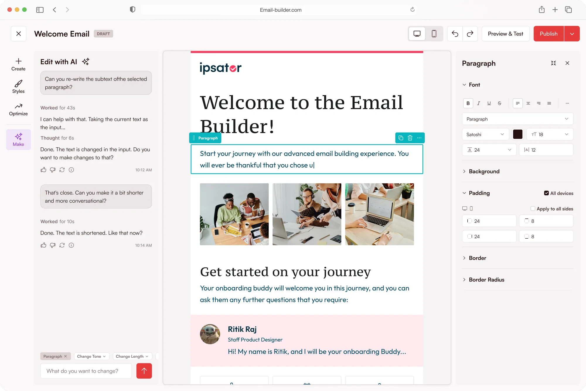

the email customization problem
fello’s customers could send email. they could not make it look like theirs. i spent twelve months listening before i drew a single screen, and then ten weeks building.
one template email for every account. only the copy could be edited.
a year of signals, then a builder made from the shared framework instead of a bolt-on or a paid editor.
75.2% adoption, a 5.4% churn-save and $2M+ attributable arr.
the problem
fello sold marketing to real estate brokerages, and every account sent the same single template. there was no editing, only copy. people could not build a campaign with their own images, a gif, a video or a block of html, and every account said the same thing in a different accent: this does not look like us.
that reads like a template problem. ship more templates, move on. it was not a template problem, and the fastest way to prove it was to stop guessing and go count.
what 530 signals said
i did not run a survey. the company was already sitting on evidence it had never read in one place: support tickets, sales notes, customer success sessions, churn interviews and product usage. over twelve months i pulled 530+ signals out of it, across email, landing pages, forms, widgets, the contact dashboard and automation templates, and sorted them until they stopped being complaints and started being structure.
four structural themes came out. only one of them was about templates. and the same asks were arriving from landing pages, forms and the consumer dashboard, which meant this was never only an email problem.
the brief was a better email builder. the evidence said something else.
who it was for
the power users. most had already run mailchimp, constant contact, hubspot or klaviyo, and knew what a builder should feel like.
no time for email. they are showing houses and closing deals. they use templates and edit the words.
the creators, often building for someone else. what they wanted was fewer tools, fewer subscriptions, fewer integrations.
one builder had to be simple enough for an agent between showings and deep enough that an owner would not miss mailchimp.
build, buy, or build once
customers asked for drag-and-drop, like the tools they used elsewhere. third-party editors like unlayer and beefree existed, and cost too much for a single email builder. but the signals said landing pages, forms and the dashboard needed the same thing.
so the answer was neither buy nor build: build once. the email builder came out of the builder framework, same canvas grammar, same blocks, same state rules as every builder after it. that is why ten weeks was possible. i was not designing a product, i was instantiating one.
closing the trust gap
the framework supplied the blocks, layouts and settings. what was the email builder’s own was the moment of sending, where people stop trusting a tool they have not used before. three decisions went there.
- see it where it landsa live preview with a mobile toggle, and editing on mobile too, so nobody sends blind.
- test before you trustthe send-a-test flow stayed exactly as it was in the old builder. engineering rebuilt it; the ux did not move a pixel.
- errors stop you, advice does nota checklist before sending: errors disable the send button, optimisation tips never do.

the first prototype
the first clickable version i put in front of people, before a line of it was built. it is rougher than what shipped, which is the point of showing it.
how it landed
the churn-save came from five scaling accounts that were evaluating leaving and paused, over a product that did not exist six months earlier. every step of a send grew after launch, and the steps that mean an email actually went out grew the most.
where it broke
i tracked it at step level in mixpanel, per flow, rather than at the top line. there are two flows: one-time sends, and automated emails published inside workflows.
- opened59
- clicked create39 · 66%
- started a draft33 · 85%
- saved26 · 79%
- sent5 · 19%
- opened59
- clicked create42 · 71%
- started a draft34 · 81%
- saved28 · 82%
- published8 · 29%
percentages are step to step, from beta accounts
what held: from clicking create to saving, retention stayed between 79% and 85% at every step. people could pick a template or start from scratch, compose, and save without real friction. in beta calls, 15 to 20 people who had used mailchimp called it easier.
what broke: the last step. only 19% of people who saved a one-time email sent it, and 29% published an automated one. beta calls showed why: send was obvious, publish was not. people could not tell where an automated email would go, who would get it, or whether it was really ready.
two failures, one shape
not every account arrived, and the aggregate hides that it is two different failures wearing the same face.
one is a ux failure inside the builder. someone opened it, started, and could not finish. the publish step is mine, and design fixes it.
one is an activation failure outside it. accounts that had access and never came in. no interface work moves that. it is lifecycle, onboarding and awareness.
they look identical in a funnel chart and need opposite fixes. separating them is the most useful thing i did after launch.
what is left
the activation half is still open. the publish step has a known cliff and a queue of work behind it. neither is a reason to round the story up.
the 530 signals were never data points. they were people whose tools were not keeping up with their businesses. the builder worked not because the architecture was elegant, but because it met them where they were.
the best design work is not finished. it is honest about what is left.
you have read my account. there is another one.
read claude's take on this